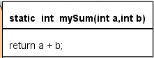
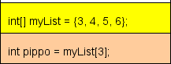
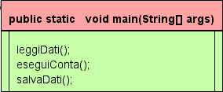
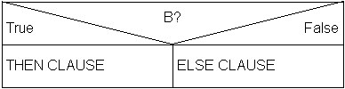
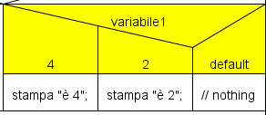
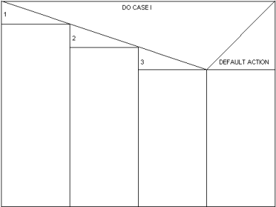
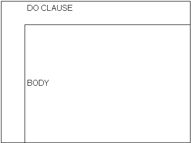
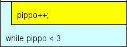
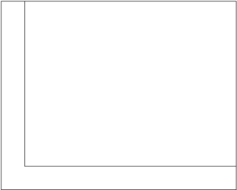
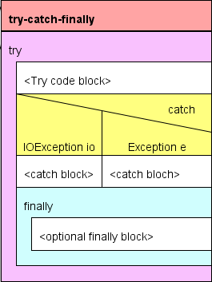

blocchi JStruct strutturati
Unit è un blocco nascosto, rappresenta l'unità di compilazione (file). Può essere
raggiunto facendo doppio clic sullo sfondo.
Sezione codice:
-
dichiarazione di package
-
dichiarazioni d'import
Sezione commento:
-
Il commento sarà posto all'inizio del codice esportato, come una sequenza di
commenti in linea (cioè utilizzando '//').
-
Di solito questo commento è utilizzato per le informazioni di licenza.
- L'utente può aggiungere qui una linea per controllare il comportamento di JStrucy in fase di importazione
-
JStruct può aggiungere informazioni a questo commento.
Il blocco class può essere utilizzato per definire classi, interfacce e Enum più tutte le variabili
globali.
Una dichiarazione di class specifica un nuovo reference type con nome.
Ci sono due tipi di dichiarazioni di class: dichiarazioni di class normali e dichiarazioni di
enum.
Una dichiarazione di interfaccia introduce un nuovo reference type i cui membri sono
classi, interfacce, costanti e metodi astratti. Questo tipo non ha alcuna implementazione, ma può essere implementato
in classi non correlate, fornendo implementazioni per i suoi metodi astratti.

|
ClassDeclaration:
NormalClassDeclaration
EnumDeclaration
NormalClassDeclaration:
[ClassModifiers] class Identifier
[TypeParameters] [Super] [Interfaces]
EnumDeclaration:
[ClassModifiers] enum Identifier
[Interfaces]
InterfaceDeclaration:
NormalInterfaceDeclaration
AnnotationTypeDeclaration
NormalInterfaceDeclaration:
[InterfaceModifiers] interface Identifier
[TypeParameters] [ExtendsInterfaces] AnnotationTypeDeclaration:
[InterfaceModifiers] @ interface
Identifier
FieldDeclaration:
[FieldModifiers] VariableDeclarators Type
|
-
Look and feel:
-
Nel menu l'icona per creare una nuovo blocco Class è

-
Un blocco Class può essere in modalità espansa o
ridotta .
-
-
sintassi Class:
-
Il codice di un blocco di classe deve essere:
<ClassDeclaration> | <InterfaceDeclaration>;
[<FieldDeclaration>;]*
-
I commenti sono consentiti anche nella Sezione codice: sono esportati nel codice Java senza
modifiche.
-
sintassi Enum:
-
Il blocco di classe permette la definizione di enum.
[<Modifiers>] enum <nome>
[<value> [(<parameter>)],]*
<value> [(<parameter>)];
[<FieldDeclaration>;]*
-
I commenti sono consentiti anche nella Sezione codice: sono esportati in codice Java senza
modifiche.
-
sezione commento:
-
- Il commento di una Classe viene esportato come commento Javadoc per la classe / interfaccia /
enum.
- JStruct può aggiungere informazioni a questo commento
-
Analyzer:
-
ATTENZIONE: il nome classe non è in maiuscolo.
-
ERRORE: una classe pubblica deve essere in un file con lo stesso nome.
-
ERRORE: il nome classe non è un identificatore Java valido.
-
ERRORE: Nome della classe uguale al nome di una variabile o di un parametro
esistente.
-
ERRORE: un identificatore Java non valido.
Blocco Metodo, per Method or Static initializer
Un Metodo dichiara del codice eseguibile che può essere richiamato, passando un numero fisso di
valori come argomenti.
Un inizializzatore statico dichiarato in una classe viene eseguita quando la
classe viene inizializzata.
|

|
MethodHeader:
[MethodModifiers] [TypeParameters] Resutl MethodDeclarator [Thows]
MethodDeclarator:
Identifier
([FormalParameterList])
|
-
Look and feel:
-
Nel menu l'icona del blocco Metodo è

-
Un blocco metodo può essere in modalità espansa o
ridotta.
-
-
Sintassi Method:
-
Il codice di un blocco Metodo deve essere:
static | main | <MethodHeader>
-
I commenti non sono ammessi nella zona codice di un method.
-
-
sezione commento:
-
- Il commento viene esportato come commento Javadoc per il metodo.
- JStruct può aggiungere informazioni a questo commento.
-
Analyzer:
-
ATTENZIONE: il nome di una variabile deve iniziare con una lettera minuscola.
-
ATTENZIONE: il nome di un metodo deve iniziare con una lettera minuscola.
-
ERRORE: non è un valido identificatore Java.
-
ERRORE: il nome del metodo è duplicato.
-
ERRORE: il nome del metodo è anche un nome di variabile.
-
ERRORE: nome non valido per un parametro.
-
ERRORE: il metodo non restituisce alcun risultato.
-
ERRORE: il metodo non può restituire un risultato.
Alcuni tipi di espressioni possono essere usate come istruzioni se seguite da punto e
virgola.
|

|

|
StatementExpression:
Assignment
PreIncrementExpression
PreDecrementExpression
PostIncrementExpression
PostDecrementExpression
MethodInvocation
ClassInstanceCreationExpression
BreackExpression
ContinueExpression
|
-
Look and feel:
-
Il blocco per le sequenze è rettangolare.
-
Nel menu l'icona del blocco sequenza è

-
Sintassi Sequenze:
-
Il codice in un blocco sequenza deve essere:
<StatementExpression>
[; <StatementExpression>]* [;]
-
sezione commento:
-
- I commenti presenti nella sezione commenti sono raggruppati come commenti di fine inea (vale a dire utilizzando '//') Vedi AbstractElemen.PROGRAMDOCONTOP.
- I commenti sono consentiti anche nella Sezione codice: sono esportati nel codice Java senza modifiche.
-
Input:
-
La parola chiave definita dall'utente come "Input" (esempio: "leggi") è speciale:
-
'leggi x' (x è una stringa) viene esportato come codice di input dalla
console standard.
-
'x = leggi("Please input a value")' viene esportato come codice di iuput con pop-up.
-
La conversione "leggi" <=> codice è reversibile in JStruct Import /
Export.
-
La parola chiave di "Input" può essere modificato nel menu di opzioni
/ parser .
-
Output:
-
La parola chiave definita dall'utente come "Output" (esempio "scrivi") è
speciale:
-
'scrivi x' (x è una stringa) viene esportato come codice di output verso la console
standard.
-
'scrivi("Result is " + x)' viene esportata come codice di output in un pop-up.
-
La conversione "scrivi" <=> codice è reversibile in JStruct Importa /
Esporta.
-
La parola chiave di "Output" può essere modificata nel menu di opzioni
/ parser .
-
Analyzer:
-
ATTENZIONE: forse manca un ";" nel codice.
-
ERRORE: non è un nome valido per una variabile.
Sequenza specializzata per Method Invocation (call).
Una call viene utilizzata per richiamare un metodo della classe o dell'istanza.
Questo blocco può essere usato come alternativa al modello standard blocco
Sequenza , utile nel caso di una strategia di progettazione top-down.
|

|

|
MethodInvocation:
MethodName ([ArgumentList]
. Primary. [NonWildTypeArguments] Identifier ([ArgumentList])
super. [NonWildTypeArguments] Identifier
([ArgumentList])
ClassName.super.
TypeName.
[NonWildTypeArguments] Identifier ([ArgumentList])
ArgumentList:
Expression
ArgumentList,Expression |
-
Look and feel:
-
Nel menu l'icona di blocco delle chiamate è

-
Sintassi chiamata di Metodo:
-
Il codice in un blocco di chiamata deve essere:
<MethodInvocation>
[; <MethodInvocation>]* [;]
-
I commenti nella sezione commenti sono raggruppati come commenti di fine
linea (vale a dire utilizzando '//') Vedi
AbstractElemen.PROGRAMDOCONTOP.
-
I commenti non sono ammessi nella sezione del codice.
-
Analyzer:
-
ATTENZIONE: il metodo chiamato non esiste.
(Nel codice Java esportato è creato uno stub per i metodi non presenti)
Blocco asternativa binaria, costrutto if-then-else.
L'istruzione if permette l'esecuzione condizionale di un blocco di codice o una scelta condizionale tra due
due blocchi, esegendo l'una o l'altro, ma non entrambi.

|

|
IfThenStatement:
if (Expression
) Statement
IfThenElseStatement:
if (Expression
) StatementNoShortIf
else Statement
IfThenElseStatementNoShortIf:
if (Expression
) StatementNoShortIf
else StatementNoShortIf
|
-
Look and feel:
-
Le etichette "YES", "NOT" e il valore del codice di default ( "<condition>") possono essere
modificate nel menu di opzioni
/ parser .
-
Le parole chiave pre e post condizione (facoltative: esempio "se" e "?") possono essere modificate nel
menu di opzioni
/ strutture .
-
Nel menu l'icona della alternativa-if è
-
Sintassi IF
-
Il codice in un blocco alternativo deve essere:
[<Pre-parola-chiave>] <condizione> | (<condizione>) [<post-parola-chiave>]
-
I commenti nella sezione commenti sono raggruppati come commenti di fine
linea (vale a dire utilizzando '//') Vedi
AbstractElemen.PROGRAMDOCONTOP.
-
I commenti non sono ammessi nella sezione del codice.
-
Analyzer:
-
ATTENZIONE: True-blocco vuoto.
-
ATTENZIONE: Un'assegnazione nelle condizioni (Forse '=' al posto di '==' ?)
Blocco switch, per alternative multiple implementate con
Switch-case.
L'istruzione switch trasferisce il controllo ad un'istruzione di una serie a seconda del valore di
un'espressione
|

|

|
SwitchStatement:
switch (Espressione )
SwitchBlock *
SwitchBlock:
SwitchLabel BlockStatements
SwitchLabel:
case ConstantExpression :
case EnumConstantName :
default :
EnumConstantName:
Identifier
|
-
Look and feel:
-
Il valore del codice di default può essere modificato nel menu di opzioni
/ strutture .
-
Nel menu l'icona Switch è

-
Sintassi Switch:
-
Il codice in un blocco switch deve essere un elenco:
<Espressione> |(<espressione>)
[<ConstantExpression> | <EnumConstantName>]*
default|%
-
La prima riga è la variabile o espressione da valutare
-
Lr righe succesive sono i valori costati dei vari
case.
-
L'ultima riga deve essere "%" o "default".
-
"%" vale "no default".
-
Commenti nella sezione commenti sono raggruppati come commenti di fine
linea (vale a dire utilizzando '//') Vedi
AbstractElemen.PROGRAMDOCONTOP.
-
I commenti non sono ammessi nella sezione di codice.
-
Blocco per iterazioni implementate con il costrutto for.
La forma basic
esegue un codice di inizializzazione, quindi esegue una espressione, un
blocco di codice, e un codice di aggiornamento più volte, terminando
quando il valore dell'espressione è falso.
La forma enhanced ha la sintassi:
for ( <FormalParameter> :
<espressione> )
<istruzione>

|

|
BasicForStatement:
for ([ForInit]
;[Expression]
;[forUpdate]
)
Statement
ForStatementNoShortIf:
for ([ForInit]
;[Expression]
;[forUpdate]
)
StatementNoShortIf
ForInit:
StatementExpressionList
LocalVariableDeclaration
forUpdate:
StatementExpressionList
StatementExpressionList:
StatementExpression
StatementExpressionList
,StatementExpression
EnhancedForStatement:
for (FormalParameter : Expression
)Statement
FormalParameter:
VariableModifiersopt Tipo VariableDeclaratorId
VariableDeclaratorId:
Identifier
VariableDeclaratorId[]
|
-
Look and feel:
-
Il valore del codice di default ( "for (int i = 0; i <???; i ++)") può essere modificato nel
menu di opzioni
/ parser .
-
Le parole chiave pre e post espressioni (facoltative: esempio "for" e "") possono essere modificate nel
menu di opzioni
/ strutture.
-
Nel menu l'icona è

-
Sintassi:
-
Il codice in un blocco FOR deve essere:
[<Pre-parola chiave>] [(] <ForInit>; <espressione>; <forUpdate> | <FormalParameter>: <Expression> [)] [<post-chiave>]
-
Commenti nella sezione commenti sono raggruppati come
commenti di fine linea (vale a dire utilizzando '//') Vedi AbstractElemen.PROGRAMDOCONTOP.
-
I commenti non sono ammessi nella sezione di codice.
Blocco per iterazioni implementate con il costrutto while.
L'istruzione while esegue un'espressione e una dichiarazione più volte e termina quando il valore
dell'espressione è falso.

|

|
WhileStatement:
while ( Expression ) Statement ;
|
-
Look and feel:
-
Il valore del codice di default ( "while (<condizione>)") può essere modificata dal
menu opzioni
/ parser .
-
Le parole chiave pre e post condizione (facoltative: esempio "finchè" e "fai") possono essere modificate nel
menu di opzioni
/ strutture.
-
Nel menu l'icona per un blocco While è
-
Sintassi Whiler
-
Il codice in un blocco while deve essere:
[<Pre-parola chiave>] [(] <Expression> [)] [<post-chiave>]
-
Commenti nella sezione commenti sono raggruppati come commenti di fine
linea (vale a dire utilizzando '//') Vedi
AbstractElemen.PROGRAMDOCONTOP.
-
I commenti non sono ammessi nella sezione di codice.
-
Analyzer:
-
ATTENZIONE: Un'assegnazione nelle condizioni (Forse '=' al posto di '==' ?)
Blocco per iterazioni implementate con il costrutto do-while.
L'istruzione do esegue prima un blocco e poi un'espressione più volte e termina quando il valore
dell'espressione è falso.
|

|

|
DoStatement:
do Statement while ( Expression );
|
-
Look and feel:
-
Il valore del codice di default ( "while (<condition>)") può essere modificata dal
menu
opzioni / parser.
-
Le parole chiave pre e post condizione (facoltative: esempio "quando" e "") possono essere modificate nel
menu di opzioni
/ strutture.
-
Nel menu l'icona del blocco do è
-
Sintassi do:
-
Il codice in un blocco do deve essere:
[<Pre-parola chiave>] [(] <Expression> [)] [<post-chiave>]
-
Commenti nella sezione commenti sono raggruppati come commenti di fine
linea (vale a dire utilizzando '//') Vedi
AbstractElemen.PROGRAMDOCONTOP.
-
I commenti non sono ammessi nella sezione di codice.
-
Analyzer:
-
ATTENZIONE: Un'assegnazione nelle condizioni (Forse '=' al posto di '==' ?)
Blocco per intercettare le eccezioni usando il costrutto
try-catch-finally.
Una istruzione try esegue un blocco. Se
viene gettato in errore e l'istruzione try ha una o più clausole di
cattura (catch) che possono intercettarlo, allora il controllo viene
trasferito alla prima di tali clausole catch.
|

|
|
Catches :
CatchClause
Catches CatchClause
CatchClause:
catch ( CatchFormalParameter
)Block
CatchFormalParameter:
[VariableModifiers] CatchType VariableDeclaratorId
CatchType:
ClassType
ClassType | CatchType
|
-
Look and feel:
-
blocco composito, un blocco try contiene un blocco
catch e un blocco finally.
-
Nel menu di un blocco Try è
-
Sintassi try:
-
parola chiave fissa, contiene solo "try".
-
I commenti nella sezione commenti sono raggruppati come commenti di fine
linea (vale a dire utilizzando '//') Vedi
AbstractElemen.PROGRAMDOCONTOP.
-
I commenti non sono ammessi nella sezione di codice.
- Sintassi try-whit-resources
-
contiene "try" e dichiarazioni di risorse tra ().
- Le dichiarazioni di risorse sono esportate senza controllo o formattazione.
- Sintassi catch:
-
Il codice di un blocco catch deve essere un elenco che inizia con "catch":
catch
[[VariableModifiers] <CatchType> <VariableDeclaratorId> ]*
[%]
-
I commenti nella sezione commenti sono raggruppati come commenti di fine
linea (vale a dire utilizzando '//') Vedi
AbstractElemen.PROGRAMDOCONTOP.
-
I commenti non sono ammessi nella sezione di codice.
- Un blocco Catch non può essere cancellato. Un blocco Catch vuoto funziona da placeholder, non viene esportato.
-
Sintassi finally:
-
Fissa, contiene solo "finally", parola chiave.
-
Commenti nella sezione commenti sono raggruppati come commenti di fine
linea (vale a dire utilizzando '//') Vedi
AbstractElemen.PROGRAMDOCONTOP.
-
I commenti non sono ammessi nella sezione di codice.
- Un blocco finally non può essere cancellato. Un blocco finally vuoto funziona da placeholder, non viene esportato.
Help |
GUI |
Blocks |
Export |
Import